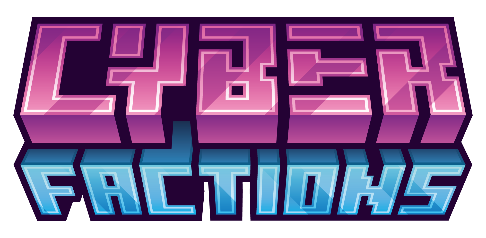

APIPublic API for building addons that interact with CyberFactions — a feature-rich Factions plugin for Paper 1.21.4+.
This host is a Maven repository. Point your build tool at
https://billyrosty.github.io/CyberFactions-API — there is nothing to download
by hand.
repositories {
maven("https://billyrosty.github.io/CyberFactions-API")
}
dependencies {
compileOnly("fr.billyrosty:cyberfactions-api:0.5.1")
}repositories {
maven { url 'https://billyrosty.github.io/CyberFactions-API' }
}
dependencies {
compileOnly 'fr.billyrosty:cyberfactions-api:0.5.1'
}<repositories>
<repository>
<id>cyberfactions</id>
<url>https://billyrosty.github.io/CyberFactions-API</url>
</repository>
</repositories>
<dependencies>
<dependency>
<groupId>fr.billyrosty</groupId>
<artifactId>cyberfactions-api</artifactId>
<version>0.5.1</version>
<scope>provided</scope>
</dependency>
</dependencies>name: MyAddon
version: 1.0.0
main: com.example.myaddon.MyAddon
depend: [CyberFactions]import fr.billyrosty.factions.api.CyberFactionsAPI;
import fr.billyrosty.factions.api.service.FactionService;
import fr.billyrosty.factions.api.model.FactionSnapshot;
public class MyAddon extends JavaPlugin {
@Override
public void onEnable() {
CyberFactionsAPI api = CyberFactionsAPI.getInstance();
FactionService factions = api.getFactionService();
// Get a faction by name
factions.getFaction("MyFaction").ifPresent(faction -> {
getLogger().info("Found faction: " + faction.getName()
+ " with " + faction.getMembers().size() + " members");
});
}
}| Service | Access | Description |
|---|---|---|
FactionService | api.getFactionService() | CRUD factions, members, roles |
PlayerService | api.getPlayerService() | Player state, power, faction membership |
ClaimService | api.getClaimService() | Claim/unclaim chunks, query territory |
EconomyService | api.getEconomyService() | Faction bank operations |
RelationService | api.getRelationService() | Set/query faction relations |
TeleportationService | api.getTeleportationService() | Homes, warps |
CommandRegistry | api.getCommandRegistry() | Register custom /f subcommands |
PermissionRegistry | api.getPermissionRegistry() | Register custom faction permissions |
UpgradeRegistry | api.getUpgradeRegistry() | Register custom upgrade properties |
AddonRegistry | api.getAddonRegistry() | Lifecycle-managed addon system |
Full API documentation with examples: billyrosty.github.io/CyberFactions-Docs